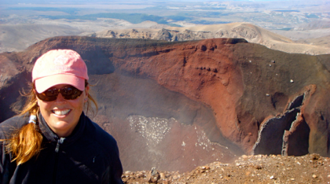

Tongariro National Park

...hvad fanden sku’ jeg egentlig her..
tirsdag den 26. februar 2008

Ahhh en fridag, hvor man har en hel dag for sig selv - hvad skal jeg dog lave ? Få massage og ordnet negle, få farvet håret, ligge og læse en god bog under dynen?
Nej, jeg skal da ud og vandre 18,5 kilometer i alpint terræn. Så det er op kl. 6.30, et varmt bad, spise havregrød og smøre madpakke.
Tim sætter mig af for enden af en grusvej kl. 8.30, og så er der ellers mellem 5,5 og 7,5 timers vandring forude.
Tongariro Alpine Crossing er New Zealands mest populære dagstur. Den snor sig op mellem vulkaner, kratersøer og ender i regnskov, så man oplever alle slags natur på turen. 100.000 mennesker går turen om året.
Da jeg har gået noget tid, når jeg til “The Devils Staircase”. Det viser sig at være en ret lang opstigning med en meget god hældning. Turens navn er blevet ændret til Alpine, for at gøre klart for alle, at der er tale om en tur i alpint terræn med seriøse hældninger - det er ikke ren hygge. Der er utrolig mange folk på ruten, det minder mig lidt om Eremitageløbet, der skal kæmpes om pladserne. Jeg kan ikke overskue at holde pause og blive overhalet, for så at skulle overhale alle igen, derfor holder jeg ikke mange pauser, kun små korte, når benene er ved at syre til.
Det er et fantastisk landskab, kæmpe vulkaner (Mt. Doom fra Ringenes Herre) træder frem i sin dysterhed. Der er øde lavamarker, krystalblå søer, røde bjerge og askefarvede områder, rygende fra jordens indre. Det er fascinerende at mærke på den varme jord, der stinker af rådne æg fra de giftige dampe.
Jeg går nedad i løst grus, og kommer til et helt andet landskab, et frodigt grønnere område, der senere igen tørrer ud i brunt græs og lyng for at ende i regnskov.
Jeg får kæmpet mig til lidt plads alene på ruten, efter at være stoppet ved en hytte. Den ro og stilhed, jeg har drømt om forstyrres dog af en helikopter, der i pendulfart flyver cement op til vandrestien. Det virker lidt underligt, at stien skal cementeres, jeg vil helst gå på grus og jord, men der må jo være en god grund til det.
Kl. 14.03 har jeg gennemført turen, det synes jeg er en ok tid, og jeg smider støvlerne og falder om i græsset, indtil Tim og pigerne henter mig.
Nu er kl. 20.42 jeg har fået en kold øl, en kop kaffe og et varmt bad. Jeg ligger i sengen med ømme stænger.
Fantastisk fridag - i morgen er det Tims tur...
/Camilla
På knæ ved det røde krater. Da jeg skulle støtte med den ene hånd, var jeg ikke lige klar over, at jorden faktisk er temmelig varm i området - AV